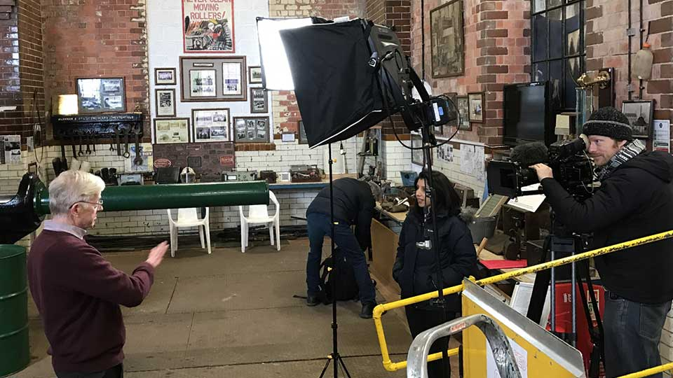

Heritage
Trails, talks, web, exhibitions
Although I skipped the family tradition of working down the pit, at the age of seventeen I was awarded an honorary membership by the Nottinghamshire branch of the National Union of Mineworkers in recognition for a mural I painted for their headquarters. The painting featured in A.R. Griffin's book The Nottinghamshire Coalfield 1881-1981. And I subsequently received a Coal Industry and Social Welfare Organisation (CISWO) scholarship to pursue my studies at Leeds Polytechnic School of Fine Art.
Digital Ambassadors
Since 2011, I have collaborated with historian Dr David Amos. David worked as a coal miner until pit closures forced him to re-evaluate his career. Returning to education as an adult student, David recognised the role digital media could play in telling the story of the industry, its culture and communities. We met as members of the East Midlands Digital Ambassadors Network and our first collaboration was A History of Coal Mining in 10 Objects, a research project led by Dr Sarah Babcock at the University of Nottingham, and supported by the Arts and Humanities Research Council (AHRC).
The project was based around ten iconic objects associated with the mining industry, and included public events, web and print publications - a multichannel approach that we have followed in most of our projects. We also worked with student filmmakers to capture underground footage at Caphouse Colliery in Wakefield, and the historic setting of the D.H. Lawrence Birthplace Museum, Eastwood, which was subsequently screened at the Broadway Cinema in Nottingham. Whilst working at the former Nottinghamshire NUM headquarters, we also uncovered a cache of twelve mining union banners that were later featured in the 2018, BBC TV series, Civilisations Stories: The Art of Mining.

BBC crew at Pleasley Colliery filming a segment for Civilisations Stories: The Art of Mining.
Mine2Minds Education
Further collaborations followed at Bestwood Colliery Winding House, and the D.H. Lawrence Centre at Durban House in Eastwood, leading to the formation of the Community Interest Company, Mine2Minds Education (M2Me). Since 2015, Mine2Minds have worked on community outreach projects with leading universities and heritage organisations in Derbyshire, Nottinghamshire, Leicestershire, and South Yorkshire.
'We take a multichannel approach to heritage projects, augmenting digital content with print material and real-world events to maximise accessibility and engagement with communities.'Paul Fillingham - Digital Design Consultant
I first met Yentob in 2012 at the Royal Festival Hall, alongside music producer Don Letts and author Will Self, at the official launch of The Space – the experimental, on-demand arts platform co-funded by the BBC and Arts Council England for the Cultural Olympiad.
Our digital literature project, The Sillitoe Trail, found a home there, bringing together over seventy creative practitioners from Nottinghamshire to explore the region’s cultural identity, just as Alan Sillitoe had done with Saturday Night and Sunday Morning.

The Arena title sequence featured a floating neon in a bottle with a soundtrack by Brian Eno.
Arts Television in 1978
But my connection to Yentob goes back much further. Once upon a time in 1978, I was an art student growing up in Robin Hood county, where the trees were green with possibility, the coal mines dark and foreboding, and the art schools full of bright young things, paper, charcoal and life models.
At art school I was prolific, painting, drawing and studying art history – not old masters, but contemporary artists – the more contemporary and contrary, the better. Local libraries offered a few books about modern artists, and contemporary practitioners were covered in magazines like Art International and Artscribe. The latter being styled more like a fanzine than an arts publication.
There was always a tradition of arts programming on British television. But with a few exceptions – Ken Russell’s Pop Goes the Easel and the occasional Southbank Show hosted by Melvyn Bragg – these programmes were largely highbrow and rather dismissive of popular culture.
BBC2 was the innovator at the time, and aired Arena, an arts magazine programme that had just been handed over to its new editor – Alan Yentob. During Yentob’s time as editor, Arena received six BAFTA nominations and three BAFTA awards.

Magritte's familiar bowler hatted Belgians motif.
In 1978, VCR’s were still a couple of years off – at least for the domestic market – we had them at school of course – chunky Philips N1502 machines that recorded 60 minutes of black and white video and were used to playback the early years sex education programme Living and Growing, thus avoiding all the embarrassment experienced by our long suffering biology teachers.
Being resourceful, I recorded the Arena programme on a portable cassette recorder, snapped black-and-white stills with my Soviet-made 35mm Zenith-e camera – capturing the sense of wonder that Arena inspired – I still have those persistent black and white negatives somewhere – and I dare say that the images would still inspire me.
The recordings I made on cassette tape could be replayed over and over, so that the message became engrained – the sound effects were eagerly anticipated, the interviews and voiceover could be recited – word for word. The screenshots, printed onto photo paper distressed by the 625 alternating scan lines that composed the analogue TV image became an iconic storyboard, providing more collage fodder for my sketchbooks – where everything was deconstructed and rearranged into something new.

Malcolm McClaren on the 1984 Arena programme Beat This! A Hip-Hop History.
The Butterfly Effect
The Magritte episode – broadcast in those first days of Yentob’s reign – was a door left ajar in the mind, revealing that reality could be edited, painted, or simply imagined away. Its impact was, in a sense, a demonstration of the butterfly effect – that a single programme, broadcast on a winter’s night, could ripple through your imagination, inspiring new ways of seeing and making.
By 1984, after I had finished art school, Arena was legitimising artists like Afrika Bambaata in Beat This! A Hip-Hop History – the first arts programme that I ever recorded to videotape – and one that still feels fresh today – well actually, quite a few vintage Yentob edited Arena programmes possess a certain vibe that is timeless and have the power to inspire future generations of artists – if only they weren’t so siloed – but the accessibility of artefacts and ideas in the digital age is another topic entirely that I won’t cover here.
In 1978, I was just one art student, learning to see, waiting to be hooked-up and connected. And, Arena, under Yentob, was a poem disguised as television – a rich network of ideas, and a mixed-media touchpoint before the digital age had even begun.